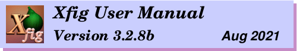
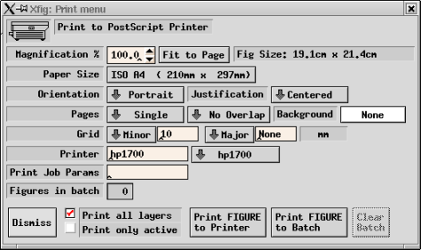

Printing and Exporting
To export or print a Fig file,
xfig calls fig2dev, the post-processor which converts the Fig
file to the desired output language. For printing, this is PostScript.
For exporting, there are a dozen or so languages, including PostScript, EPS,
LaTeX, MetaFont, and bitmap formats such as GIF, JPEG, PPM and several others.
See the Language description of the Exporting section.
This means that you must have fig2dev installed on your system along
with xfig.
Fig2dev is always available where you find xfig.
See Getting and Installing Xfig for details.
The Print... entry in the
File menu
(or accelerator Meta-P) provides the facility
to print figures to PostScript
printers. Use File/Export if you want to store the output to a file.
The accelerator Shift-Meta-P will print using the previously set
paramters (i.e. the print panel isn't popped up, but the figure is printed).

 Magnification
Magnification
-
Specify the magnification when printing figure in percent of full size (%).
The default is 100% and may be set by the Fig.magnification resource.
-
Fit to Page
-
Clicking this button will set the Magnification automatically so that
figure size will just fill current Paper Size with at least 1/2
inch margin all around.
-
Orientation
-
Specify the orientation of the output as Landscape (horizontal)
or Portrait (vertical). The default orientation is same as the
orientation of the canvas which may be changed by
Portrait/Landscape
in the View menu.
-
Justification
-
Specify if the figure should be Flush Left or Centered on the
paper of size selected by Paper Size.
-
Paper Size
-
Specify the size of the paper.
The following paper sizes are available:
 Letter (8.5in x 11in)
Letter (8.5in x 11in)
-
Legal (8.5in x 14in)
-
Tabloid (17in x 11in)
-
ANSI A (8.5in x 11in)
-
ANSI B (11in x 17in)
-
ANSI C (17in x 22in)
-
ANSI D (22in x 34in)
-
ANSI E (34in x 44in)
-
ISO A9 (37mm x 52mm)
-
ISO A8 (52mm x 74mm)
-
ISO A7 (74mm x 105mm)
-
ISO A6 (105mm x 148mm)
-
ISO A5 (148mm x 210mm)
-
ISO A4 (210mm x 297mm)
-
ISO A3 (297mm x 420mm)
-
ISO A2 (420mm x 594mm)
-
ISO A1 (594mm x 840mm)
-
ISO A0 (840mm x 1189mm)
-
JIS B10 (32mm x 45mm)
-
JIS B9 (45mm x 64mm)
-
JIS B8 (64mm x 91mm)
-
JIS B7 (91mm x 128mm)
-
JIS B6 (128mm x 182mm)
-
JIS B5 (182mm x 257mm)
-
JIS B4 (257mm x 364mm)
-
JIS B3 (364mm x 515mm)
-
JIS B2 (515mm x 728mm)
-
JIS B1 (728mm x 1030mm)
-
JIS B0 (1030mm x 1456mm)
-
Pages
-
If Multiple is selected here, the figure will be split into multiple
pages if the size of the figure is larger than Paper Size. It allows
the user to output a figure larger than paper size by pasting
those papers together (to make it easier, xfig generates output
so that the parts of the figure will be overlap).
If Single is selected here, this facility will not be used;
any part of the figure outside the paper boundary will be clipped.
-
Background
-
This will set the background color of the whole figure
when printing. The default is white.
-
Grid
-
You may print a light-gray grid on the page by choosing a minor (thin) and/or
a major (thick) grid spacing from pulldown menus or entering the spacing
directly in the entry. The units of grid spacing are inches or mm, depending
on the units of the figure.
-
Printer
-
Specify the printer name output should be directed to. If this field is empty,
output will be directed to the default printer.
The default value is specified by the resource Fig*printer*string
or the environment variable $PRINTER.
If your system uses /etc/printcap to define printers, xfig will make
a pulldown menu of printers next to the entry.
-
Print Job Params
-
The string specified here will be passed as command-line options when executing
lpr (lp on System V system). If %f is included in the string,
(it may appear more than once) it will be replaced by the name of the figure.
The default is empty, but it may be specified by Fig*job_params*string
resource.
-
Figures in batch
-
This indicator shows how many figures have been put in the batch file
for printing. Figures may be printed into the batch file by Print FIGURE
to Batch, and those figures may be sent to the printer as one print job
by clicking on Print BATCH to Printer.
-
Dismiss
-
Clicking this button will close the Print panel. The accelerator Meta-C
will also perform this function.
-
Print all layers/Print only active
-
You may print the whole figure (all layers) or just the layers that are
active according to the layer manager.
-
Print FIGURE/BATCH to Printer
-
Clicking this button will spool the figures in the batch file
if any, or the current figure if none, to the printer.
The accelerator Meta-P will also perform this function.
The label of this button will be Print BATCH to Printer if there
are any figures in the batch file, or Print FIGURE to Printer
if there are none.
When printing to the printer, xfig will first convert the figure
to PostScript with fig2dev
program, and pass the result to lpr (lp on System V system).
When executing lpr (or lp), the printer name specified by
PostScript Printer field and options specified by Print Job Params
will be passed as command-line options.
-
Print FIGURE to Batch
-
Clicking this button will append the current figure to the batch file.
The accelerator Meta-B will also perform this function.
The figures stored in the batch file will be printed to the printer
when Print BATCH to Printer is clicked later. You can use this facility
when you want to send some figures to the printer at one time.
-
Clear Batch
-
Clicking this button will erase the accumulated figures in the batch
file. The accelerator Meta-X will also perform this function.
The figures are automatically deleted from the batch file when
Print BATCH to Printer is clicked.
The Export... entry in the
File menu
(or accelerator Meta-X) provides the facility
to output the figure in various format such as PostScript,
GIF, JPEG, HP-GL, etc. to a file.
This is useful when you want to read figures by other applications
(LaTeX or FrameMaker, for example).
See LaTeX and Xfig for hints about
using xfig with LaTeX.
The accelerator Shift-Meta-X will export using the previously set
paramters (i.e. the export panel isn't popped up, but the figure is exported).
Use File/Print if you want to print the
figure to a PostScript printer.
![[Export Panel]](images/export-panel.png)
-
Language
-
Specify the format (language) to be generated as output. The default is
Encapsulated PostScript, but may be changed with the resource
Fig.exportLanguage.
The following formats are available:
Vector formats:
-
PostScript
-
Encapsulated PostScript (EPS)
-
PDF (Portable Document Format)
-
EPS and PDF (two files)
-
LaTeX box (figure boundary)
-
LaTeX picture environment
-
TeX/LaTeX with tikz macros
-
LaTeX with pstricks macros
-
Combined PostScript/LaTeX
-
Combined PDF/LaTeX
-
Combined PostScript/PDF/LaTeX (three files)
-
PicTeX macros
-
IBMGL (HP-GL)
-
DXF (Drawing Interchange Format)
-
GBX (Gerber, RS-247-X)
-
Textyl \special commands
-
TPIC
-
PIC
-
HTML Image map
-
MF (MetaFont)
-
MP (MetaPost)
-
CGM
(Computer Graphics Metafile - useful to import into Microsoft WORD, etc.)
-
EMF
(Enhanced Metafile)
-
SVG (Scalable Vector Graphics)
-
Tk (Tck/Tk toolkit canvas)
-
Perl/Tk
Bitmap formats:
-
GIF
Graphic Interchange Format
-
JPEG
-
PCX
Paintbrush format
-
PNG
Portable Network Graphics
-
PPM
Portable Pixmap
-
SLD
(AutoDesk slide format)
-
TIFF
Tag Image File Format
-
XBM
X11 Bitmap
-
XPM
X11 Pixmap
As a variation of the LaTeX format, epic, eepic and eepicemu
macros are also available. It is also possible to output the text part of the
figure in LaTeX and the graphics part in PostScript using Combined PostScript/LaTeX.
This is especially useful when complex numerical formulas are included in
the figure (see also TEXT FLAGS).
Not all of the features in xfig are supported by all export languages.
For example, imported pictures
are not supported for IBMGL export.
The PostScript export language supports all features
of xfig and a fairly high quality output will be generated.
The fig2dev program, part of the Fig2dev package available with xfig
does the actual conversion from Fig to the output language.
To export the figure in a bitmap format such as GIF or JPEG, you must have the
GhostScript and
netpbm
packages on your system.
-
Magnification
-
Specify the magnification when exporting figure in percent of full size (%).
The default is 100% and may be set by the Fig.magnification resource.
-
Export all layers/Export only active
-
You may export the whole figure (all layers) or just the layers that are
active according to the layer manager.
-
Border Margin
-
When exporting to PostScript, Encapsulated PostScript, HTML MAP, or any
of the bitmap formats (e.g. GIF, JPEG, etc.), you may add a margin
space around the figure. The size of the margin is in pixels or 1/80th inch.
-
Background
-
This will set the background color of the whole figure
when printing. The default is white.
-
Grid
-
You may add a light-gray grid to the page by choosing a minor (thin) and/or
a major (thick) grid spacing from pulldown menus or entering the spacing
directly in the entry. The units of grid spacing are inches or mm, depending
on the units of the figure.
The grid option is available for PostScript, Encapsulated PostScript,
PDF, PSLatex, PDFLatex, pstricks, tikz and all the bitmap export formats.
The default is None.
-
PostScript Options - These options will appear below the Grid options
when PostScript is selected as the export language.
-
-
Paper Size
-
Specify the size of the paper. See description in Print
Panel about available paper sizes. This is effective only if PostScript
is selected at Language.
-
Fit to Page
-
Clicking this button will set the Magnification automatically so that the
figure size will just fill current Paper Size with at least 1/2
inch margin all around. This is effective only when PostScript is
selected as Language.
-
Orientation
-
Specify the orientation of the output as Landscape (horizontal)
or Portrait (vertical). The default orientation is same as the
orientation of the canvas which may be changed by
Portrait/Landscape
in the View menu.
-
Justification
-
Specify if the figure should be Flush Left or Centered on the
paper of the size selected by Paper Size. This is effective only if
PostScript is selected at Language.
-
Pages
-
If Multiple is selected, the figure will be split into multiple
pages if the figure is larger than Paper Size. If Single
is selected, this facility will not used. This is effective only if
PostScript is selected at Language.
-
Offset
-
When exporting figure, the figure will be shifted to the right or down by the
amount specified here.
Use negative numbers to shift it left and/or up.
The unit of the amounts may be selected from
Inches, Centimeters, and Fig Units(1/1200 inch in version 3.x).
-
Bitmap Options - These options will appear below the Grid options
when any bitmap format is selected as the export language.
-
-
Smoothing
-
This will smooth the image by calling fig2dev
with either the `-S 2' (Some smoothing) or -S 4 (More smoothing)
option to tell GhostScript to render at
2x magnification which improves font rendering,
then passes through pnmscale to reduce to original size,
which also smooths the image by averaging colors of adjacent pixels.
The default is No smoothing.
-
Transparent Color
-
For GIF export, it is possible to specify one of the colors as "transparent".
When displaying the figure with GIF viewers that support Transparent GIF
(such as Netscape Navigator, for
example), the color will not appear but the background of the viewer will show
through in place of the color.
The default is None.
-
-
JPEG Image quality
-
If the export language is JPEG,
an entry to select the "quality factor" appears.
The default is 75.

-
Default File
-
Output will be written to this file if Output File is empty.
This file name is the figure name plus an extension that reflects the output
format at the default, and it will be changed to the specified file name if
export has been performed by specifying a file name in Output File.
-
Output File
-
Specify the file name the output should be written to. If this field is
empty, the file name in the Default File field will be used.
The file name in the Output File field may be changed by selecting
a file name in the Fig Files list, or typing the file name from
keyboard directly. If Return is typed after file name is entered,
export to the file will be performed as if the Export button was clicked.
-
Alternatives
-
The list of files in the current directory (only files matching the pattern specified
by Filename Mask) are displayed, and users may select a file for output
from the list.
Clicking a file name in this list with mouse button 1 will copy the file name
to the Output File field. Double-clicking a file name in this list
with mouse button 1 will cause exporting to the file as if Export
button was clicked. Note that exporting to the existing file will over-write
the old contents of the file.
-
Filename Mask
-
Only the files matching this pattern will be put in the File
Alternatives list. The pattern is similar to the one used
by the UNIX shell, and it is possible to use meta-characters like "*"
or "?".
Typing Return in this field will cause rescan of the current directory
as if Rescan button was clicked.
This string will be changed according to the language
selected with the Language menu.
-
Current Dir
-
This shows the current directory, and files in the directory will be displayed
in the Alternatives list.
The directory name in the Current Dir field may be changed
by clicking a directory name in Directories list, or by
typing the directory name from keyboard directly. If Return is typed
after directory name is entered, the directory will scanned as if Rescan
button was clicked and the contents of Alternatives list will be updated.
-
Directories
-
The list of directories in the current directory is displayed here, and clicking
any item in this list with mouse button 1 will cause a move to the directory.
Normally, hidden directories are not displayed here, but this may be
toggled by Show Hidden button.
".." indicates the parent directory. Moving to the parent directory
may also be performed by clicking mouse button 3 on the Alternatives
list or the Directories list.
-
Home
-
Clicking this button will move to the home directory of the user.
-
Show Hidden
-
This button controls if hidden directories (directories whose names start
with ".") should be displayed or not. Clicking this button will
toggle the state. Normally, hidden directories are not displayed.
-
Rescan
-
Clicking this button will scan files in the current directory
and update the Alternatives list. The accelerator Meta-R
will also perform this function.
-
Cancel
-
Clicking this button will close the Export panel. The accelerator Meta-C
will also perform this function.
-
Export
-
Clicking this button will export to the file specified by Output
File field if any, or the file in Default File.
The accelerator Meta-X will also perform this function.
When trying to export to an existing file other than Default File,
popup panel will appear and the user will asked to confirm the export operation.
If the figure is exported to a file other than Default File,
then Default File will be set to the actual export file name.
It is possible to generate image map (clickable map) of HTML 3.2
by selecting HTML Image Map as
Language
on the Export panel.
To use this facility,
using Comments on the Edit panel,
comment like:
HREF="url" ALT="string"
must be set for objects you want to make it clickable.
Here, url is URL of the target of the link,
string is alternative string for browsers
which will not display images
(ALT attribute is required in HTML 3.2).
string will be used as label of alternative text links
xfig will generate with the image map, too.
TEXT objects can't be used for links.
CIRCLE, ELLIPSE, SPLINE and ARC will be approximated with polygons.
Open objects such as POLYLINE or OPEN SPLINE will be
treated as if it is closed.
ARC-BOX will treated as if is is a BOX.
[ Contents |
Introduction |
Credits ]